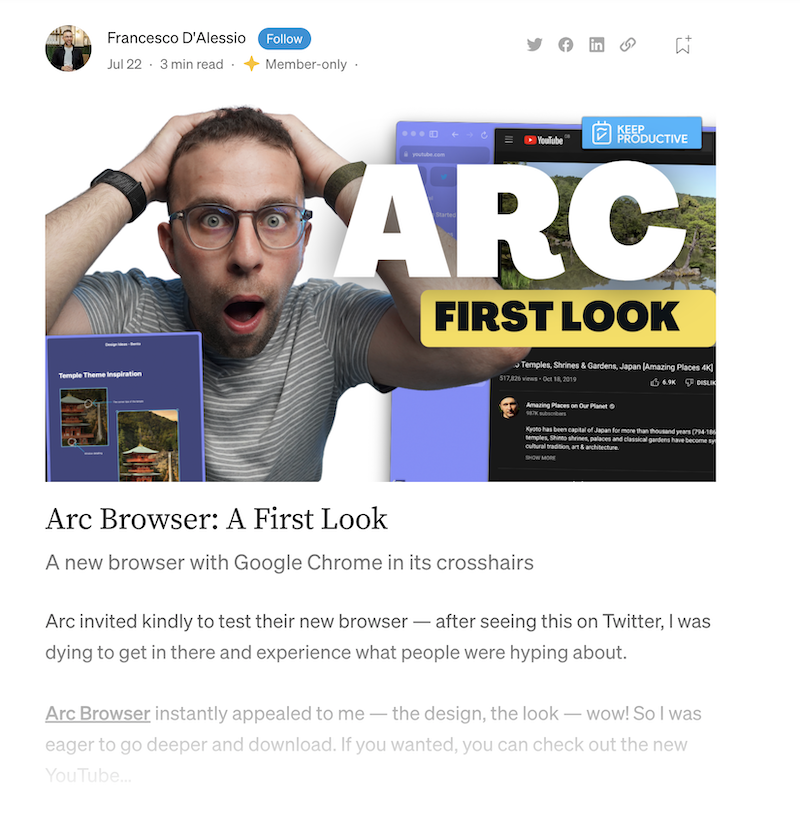

Sunday, October 30, 2022
I wish every app wasn't trying to be a fully-formed todo app. It makes me want to try using every one of them for my tasks and ends up just confusing me further.
I'm pretty much done thinking about "tools for thought". It quickly becomes an infinity of navel gazing and a complete waste of time. It's an easy topic for budding "influencers" because you don't actually need to know anything. All they need is to spend some time with a new bit of software and tell people how they should use it and the next thing you know they're selling an online course via their budding YouTube channel.
This is fun. Enter some keywords and the site generates dozens of business name and logo ideas from them. https://namelix.com/
I keep wondering if I've missed yet another boat with AI and ML. It occurred to me that I haven't even been looking for boats, so how could I have missed them?
Using Tana can feel like data entry, and that's not how I want to write or take notes.
I was trying to find some information about my favorite new browser and clicked a link to an article that looked like this...
 
That's an immediate click of the Back button. I don't care what's in the article, I'm not reading it.
I believe web development has become mired in such complexity as to render it untenable. I am having trouble mustering the energy to care about any of it.
The best way to lose something is to first over-think where to put it.